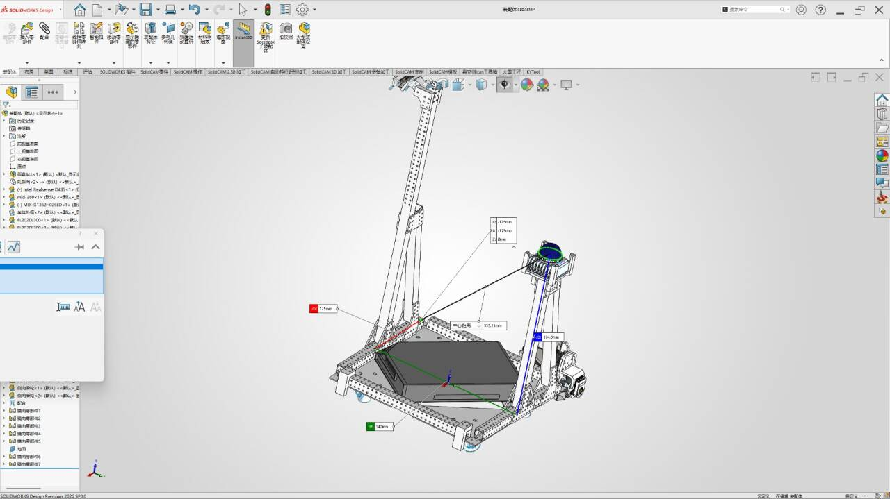

指定车架角点的地面投影对O，初始方向对齐场地轴，再建立起点。输出为角点，Z未验收；精度状态如实保留。
任务三 · 角点坐标交付包
版本：2026-11-12 r1（工程试用交付）。接收方：视觉组。
本包让主机运行雷达定位，计算约定角点的X、Y、yaw，并由视觉订阅。已有桌面UI用于建立起点、 显示坐标、查看时效和停止本窗口启动的接口。主机环境尚未提供，不能把本包已生成说成目标主机已部署。
先看哪份文件
1. 浏览器打开docs/00_使用说明.html，先理解启动顺序和接口。 2. 主机操作人员看docs/01_主机部署与启动.md；视觉开发人员看docs/03_视觉接收接口.md。 3. 解释“坐标怎么算”看docs/02_角点计算与坐标约定.md。 4. 测试范围与当前限制见docs/04_版本与测试结论.md。
主机环境未知时先做什么
解压到一个长期保留、用户可写的目录，进入解压目录，运行：
bash bin/task3 check --out host_environment.json
把host_environment.json交给雷达开发人员判断安装路径。检查仅读取系统环境，不连接雷达、不安装软件。 本机验证基线是Ubuntu 24.04 / ROS 2 Jazzy / Python 3.12；其他ROS版本、Windows或不同架构没有实机部署保证。
已有雷达驱动和FAST-LIO时
复制config/deploy.env.example为config/deploy.env，将TASK3_BASE_SETUP填写为目标主机已有雷达工作空间 的install/setup.bash绝对路径，再运行：
bash bin/task3 build-app
bash bin/task3 ui
需要现有驱动和FAST-LIO已输出正确的/Odometry（camera_init→body）。若已有其他坐标定义，先适配，不能只改话题名。
如何把坐标给视觉
雷达主机运行发布程序，视觉程序订阅/vision/state（ROS 2 std_msgs/msg/String中的JSON）。 读取data.x、data.y（米）、data.yaw（弧度），遵守valid、stamp_ns和reference_id。
接收示例：
bash bin/task3 receive
同机只需订阅，不用复制数字。跨机还需要ROS网络互通、相同ROS域和同步时钟；真实跨机情况尚未验证。 程序默认支持ROS 2接入；视觉若只用非ROS环境，需要先说明接收方式，再增加对应适配层。
本包边界
• 输出约定的车架刚性角点，不是轮胎接地点，也不是车心。视觉需要车心时自行用真实角点→车心向量换算。
• 每次新的FAST-LIO会话，把正确角点的地面投影对准正式O，车体图示轴对齐场地轴，再建立起点。
• 多轮连续运行保留原点；断电/定位重初始化或改用另一实体点后须重新按正确姿态建立起点。
• 有效输出为X/Y/yaw；Z未作有效高度交付。物理精度标志仍false；用户选择现有精度先交付试用，不补返回残余试验。
• 本包不携带历史起点、地图、原始录包或账号资料。包含当前源码/配置、FAST-LIO与驱动源码、说明与示例。
• ROS、编译依赖、Livox-SDK2需要目标主机提供或按说明安装；这不是含操作系统与全部依赖的离线镜像。
运行bash bin/task3 help查看入口。文件清单和SHA256见MANIFEST.json，可用python3 tools/verify_release.py校验。
主机部署与启动
主机指持续运行驱动、定位、角点计算的电脑。视觉可以同机订阅，也可以另一台电脑通过ROS网络接收。 目标主机环境尚未知，本包先按当前已验证的Ubuntu 24.04 / ROS 2 Jazzy交付源码；不要直接搬本机install目录。
1. 解压与环境报告
在目标电脑解压交付tar.gz，进入解压产生的task3_corner_vision_20261112_r1目录。
bash bin/task3 check --out host_environment.json
python3 tools/verify_release.py
第二条只核对交付源码清单。环境报告和校验成功都不代表硬件定位/精度已经验证。 若目标主机ROS/Ubuntu版本不同，先把报告交给维护者，不直接更改车体机械参数解决系统兼容问题。
2. 软件依赖与两种部署路径
基线需要ROS 2 Jazzy、colcon、系统Python的numpy/PyYAML/tkinter；上游还需要PCL、Eigen、 ROS的pcl_ros/pcl_conversions、Livox-SDK2共享库与头文件。主机已具备时不用重复安装。 依赖检查/安装按主机管理员的ROS环境进行，包不会在启动时自动sudo或安装系统软件。
路径A：主机已有正常的雷达栈
cp config/deploy.env.example config/deploy.env
编辑config/deploy.env，取消TASK3_BASE_SETUP那一行的注释，填写目标主机真实路径，示意：
TASK1_ROS_SETUP=/opt/ros/jazzy/setup.bash
TASK3_BASE_SETUP=/实际雷达工作空间/install/setup.bash
ROS_DOMAIN_ID=0
这是目标机路径，不能填开发者电脑的历史路径。然后：
bash bin/task3 build-app
路径B：需要部署包内驱动与FAST-LIO源码
vendor中包含从现场实际栈冻结的livox_ros_driver2与FAST_LIO源码及上游许可证。 先准备与ROS匹配的编译依赖；Livox-SDK2源码不在本包内，可按驱动README所链接的 官方SDK2说明安装。驱动需要 /usr/local/lib/liblivox_lidar_sdk_shared.so及livox_lidar_api.h等头文件。
安装好依赖后，从交付目录执行：
bash bin/task3 build-stack
它在本目录upstream_ws构建上游，再构建应用，不覆盖目标机已有工作空间。 source路径运行时自动选择本目录upstream_ws/install/setup.bash；如果deploy.env设置了其他上游，则显式配置优先。 这条完整构建路径附有源码，尚未在未知目标机验证；当前已验证的是本机解压副本的应用构建与接口。
3. 雷达网络
当前车载MID-360为192.168.1.131；驱动JSON接收地址为主机192.168.1.5。 把连接雷达的目标机有线网口配置为192.168.1.5/24，无需默认网关；网卡名由目标机决定。 若主机地址需要改变，须同步改config/car_mid360_131.json的host_net_info各接收地址，不能只改环境变量。 视觉在另一台电脑时使用自己的唯一IP，不能也配置为192.168.1.5。该网段最好无其他主机占用同地址。
4. 日常启动：三个终端
每个终端先进入本交付目录。已有健康驱动/定位时跳过相应启动，不开第二份发布者。
终端1：
bash bin/task3 lidar
终端2：
bash bin/task3 fastlio
车保持静止，等IMU及局部地图初始化完成。
终端3（有桌面）：
bash bin/task3 ui
把指定车架角点的垂直投影对正式O，恢复规定初始朝向/场地轴，点击“建立起点并启动”，保持车不动， 程序用约2秒稳定样本建立本次task3_start。等待坐标出现和新起点编号，再允许移车。 图示轴与场地轴同向时，输出就是本次正式轴下的相对坐标；不能只摆O、不对初始朝向。
没有图形桌面，可将终端3替换为：
bash bin/task3 start
这是相同起点/接口逻辑的终端入口。初始点和方向仍需人实际摆正。 保存的历史起点不能在任意位置重启后直接复用；当前包不是任意位置上电的固定地图重定位系统。
5. 视觉接收
同机另开终端，进入交付目录：
bash bin/task3 receive
可加--seconds 10 --report receiver_report.json记录示例接收情况，报告路径必须不存在。 坐标会在尚无视觉业务程序时正常发布；接收示例只是另一个订阅者，不会拿走别人的消息。
跨机：接收电脑要有相容ROS 2环境，ROS_DOMAIN_ID一致，DDS网络允许发现/通信，时钟同步， ROS_LOCALHOST_ONLY等配置不能限制到本机。网络隔离/多网卡时要按现场DDS实现配置。 接收端必须执行自己的超时检查；本机验证不能替代跨机验证。
6. 演示和停止
无雷达时可运行：
bash bin/task3 demo
合成演示仅在域93，UI明确标“离线演示”，不修改实车起点、不启动驱动或FAST-LIO。 它用于熟悉接收协议，不能测物理精度。无桌面可加--no-gui --seconds 8。
停止：先在UI停止接口并关闭窗口，再在FAST-LIO终端Ctrl+C，最后驱动终端Ctrl+C，之后才断电。 UI不会停止其他终端启动的雷达/定位。换起点会改变reference_id，视觉清空旧轨迹/累计偏移。
常见问题
| 现象 | 处理 |
|---|
| No module named rclpy或找不到ROS | 运行check，核对ROS安装及deploy.env；使用系统Python |
| 找不到fast_lio/livox_ros_driver2 | 配置已有上游路径或按路径B构建 |
| UI不能打开 | 主机可能无桌面/python3-tk，先使用start终端入口 |
| 起点无新鲜稳定窗口 | 检查源定位时效/链路及车是否静止，不修改时间戳冒充恢复 |
| valid=false | 按reason排查，弃用旧坐标，不仅看进程是否活着 |
| physical_accuracy_verified=false | 如实保留的精度状态，不是没有坐标；用户已选择先工程试用 |
| 转向出现几十厘米偏移 | 优先核对是否同一指定车架角点、安装方向和机械链，不能把它归零掩盖 |
角点怎样从雷达定位算出来
数据路线
MID-360点云+内置IMU → 驱动 → FAST-LIO → /Odometry
→ 角点刚体换算 → 固定初始角点坐标系 → 有界平滑/时效检查 → /vision/state
ROS话题是程序之间的数据通道；FAST-LIO输出不是约定角点坐标，需要任务三程序继续换算。 FAST-LIO一边用IMU预测短时间运动，一边用点云与局部地图的几何关系纠正，输出位置和完整姿态。 本车/Odometry为camera_init→body，body是IMU状态原点，不能直接当雷达半球中心或车心。
为什么转弯必须旋转机械偏移
车架角点与IMU之间的距离固定，但相对地面的方向随车转动。计算是：
世界中的角点位置 = 世界中的body位置 + 当前body旋转矩阵 × body到角点的固定向量
p_corner = p_body + R_body × r_body_corner
完整程序先组合source→body→雷达→图示轴表达的角点，使用三维旋转/平移。 X/Y输出延期高度验证，不等于内部删掉Z；车有倾斜时竖直杆臂也可能影响水平位置。
当前配置（m）：
| 项目 | 值 |
|---|
| IMU/body→雷达内部平移 | (-0.011,-0.02329,+0.04412) |
| 雷达→指定角点，以图示轴表达 | (+0.175,+0.340,-0.3745) |
| lidar_to_diagram_rpy | (0,0,+π/2)，按代码R_L_D方向组合 |
| 组合body→角点平移 | (-0.351,+0.15171,-0.33038) |
安装方向约定：雷达+X朝图示-Y；图示轴在操作者俯视、面朝背离出线侧时，左为+X、后为+Y。 不能把图示向量直接当IMU向量，也不能把CAD负坐标取绝对值。机械没有拆改时沿用配置。
目标点是指定的车架金属角点，不能临时改用另一角、轮胎接地点或万向轮转轴。 选错参考点时，初始归零可能掩盖差异，转弯后会出现大偏移；遇到这种现象先认清实体点。
下图是现有MID-360侧机械标注参考：选点在底盘金属车架，标注dX175、dY340、dZ374.5mm。 截图标注的距离大小与程序带符号向量需结合上述轴约定理解，不以轮胎接地点代替。

初始角点原点与场地轴
建立起点时，程序取连续约2秒低变化样本，位置中位数、四元数平均，求初始角点位置与初始图示+X方向。 把初始角点XY设为0，图示+X水平投影设为固定世界+X，初始yaw设为0。
输出角点 = 固定初始轴旋转 ×（当前角点世界位置 − 初始角点世界位置）
原点和轴之后固定，不能随车转动。正式场地轴已规定时，必须先把车体图示轴实际对齐场地轴再建立起点。 yaw表示车体图示朝向相对初始方向的转角，不是速度方向；从上方看逆时针为正，按atan2输出，可能在±π处换符号。
绕车心转：偏离车心的角点会真实移动。绕目标角点转且投影固定：理想XY保持0。 程序不会根据“正在转弯”把XY强制锁0，更不会在返回时自动归零。
平滑在做什么
车载自适应滤波min_cutoff=0.5Hz、beta=80、导数截止1Hz。慢时减小抖动，快时提高跟随速度。 每个采样时刻，平滑后XY与未经该层平滑的XY距离最多3mm；不是每帧只允许走3mm，也不是误差保证3mm。 源采样时间、姿态、内部Z不变，原始角点raw_odom保留；它不能消除长期厘米级偏差。
视觉需要车心时
当前与雷达侧约定交付角点，视觉自行换算。若r_C_H是“角点→车心”在车体图示轴中的真实向量， 水平简化条件下有：
x_center = x_corner + cos(yaw)*r_x - sin(yaw)*r_y
y_center = y_corner + sin(yaw)*r_x + cos(yaw)*r_y
本包未确认该角点→车心向量，不拿雷达→角点尺寸代替它，不凭转动轨迹拟合后当机械真值。 要求完整倾斜姿态时，使用/vision/odom的姿态与一致的三维杆臂，且仍遵守有效性与Z边界。
维护者改哪里
• 机械/安装参数：config/car_task3_local.yaml，改后建立新起点并独立验证，保留旧版本。
• 上游FAST-LIO参数：config/car_fastlio.yaml，当前map/surf0.15m、iter3；修改须重启上游并新建起点。
• 刚体计算：src/task1_fusion/task1_fusion/corner.py、task3_config.py。
• 平滑/初始化：task3_quality.py、tools/task3_set_start.py。
• 接口与失效：vision.py、vision_node.py；接收示例tools/vision_subscriber.py。
看算法说明可以理解这些关系；视觉集成只需按接口约定订阅，不需要自行重写FAST-LIO。
视觉接收接口
主通道/vision/state，ROS 2类型std_msgs/msg/String，msg.data是一段JSON。 另有/vision/pose、/vision/odom供需要标准消息的程序使用；它们没有持续的失效心跳， 所以建议以/vision/state为可用性入口，不能只订阅pose并一直复用最后结果。
正常JSON示意（示意值，不是现场实测）
{
"schema_version": 1,
"valid": true,
"reason": "tracking_unverified_extrinsics",
"reference_point": "corner",
"position_unit": "m",
"yaw_unit": "rad",
"reference_id": "task3_start_示意编号",
"data_source": "live",
"output_components": ["x", "y", "yaw"],
"z_valid": false,
"physical_accuracy_verified": false,
"data": {
"stamp_ns": 1794473000000000000,
"frame_id": "task3_start",
"x": 0.1,
"y": -0.2,
"z": -0.33,
"yaw": 1.5707963267948966
}
}
z是内部兼容字段，不是已验证的地面高度。接口rad，UI显示度；+π/2等于逆时针90°。
接收规则
1. 检查schema_version=1、reference_point=corner、单位m/rad，实车使用data_source=live。 2. valid=true且data存在才读取；否则清除旧有效位置，按reason处理。 3. 检查data.stamp_ns的新鲜度：默认允许源年龄不超过0.5s、未来容差0.05s；接收心跳超过0.5s也弃用。 4. 保留原采样时间，不把旧坐标重新标为当前时间。跨机必须同步时钟。 5. 相同reference_id/frame_id/stamp_ns的重复心跳不是一份新的定位观测；用时间戳区分新采样。 6. reference_id或frame_id改变，清除旧场次轨迹/累计偏移，按新原点接收。 7. yaw在±π处可能换符号，角差使用环绕处理；有连续转角需求时在接收侧展开。
valid说明当前可用，不代表精度已验收。当前允许名义机械参数的工程试用，physical_accuracy_verified如实false。 不要为了显示绿色而改true。超时会发valid=false、data=null；停止发布程序后，接收端自己的超时检查仍需工作。
示例代码怎么用
bash bin/task3 receive
对应tools/vision_subscriber.py。它每秒打印最近接收的X/Y/yaw，持续检查有效性/时间、单位和起点变化， 不会把示例打印频率当定位频率。把相同检查逻辑接入视觉业务节点，在注释处增加视觉自己的角点→车心/相机换算。
它会显示physical_accuracy_verified=False，这是当前记录边界，不是没有输出。 如只需临时看消息，可在已source ROS的终端执行ros2 topic echo /vision/state std_msgs/msg/String --once， 该命令不代替业务程序的超时处理。
跨机如何分工
雷达主机负责驱动、FAST-LIO、角点、接口持续发布；视觉电脑只运行订阅业务，不要启动第二套角点发布者。 两端ROS_DOMAIN_ID相同，ROS网络互通、时钟同步；网段和DDS配置由双方电脑实际环境决定。 先接ROS示例，再接视觉业务。真实跨机/视觉业务接入尚未执行，交付包的本机软件检查不代替该步骤。 如果视觉不用ROS，先确认目标协议（例如TCP或共享进程API），再开发适配，当前包没有冒称已支持全部方式。
版本、证据与目前交付范围
2026-11-12 r1，工程试用源码包。用户认为现有精度暂时足够，选择推进视觉交付，不再补返回残余测量。 这是用户对当前用途的选择，不把未测返回当成通过，也不把physical_accuracy_verified改true。
当前采用的配置
• FAST-LIO：map/surf0.15m、max_iteration3。
• 机械：雷达→角点图示(+175,+340,-374.5)mm，安装轴和IMU偏移按已确认配置。
• 平滑：0.5Hz/beta80、导数1Hz、每采样XY改动上限3mm。
• 输出：初始角点原点、固定初始图示轴，X/Y/yaw；Z有效高度延期。
• 0.10m地图在旧包退步，因此没有用于该版本。
真实数据能说明什么
1. 2026-11-12完整旧平移表，用户向组长确认A=-X0.5m、C=-Y0.5m后， A二维参照差4.43mm、C11.00mm。只改评价参照，没翻转/缩放定位；摆放和标记误差仍包含其中。 2. 重新辨认角点后，16:44:26截图显示X=1.4mm、Y=11.5mm、yaw90.62°， 用户说明绕建立原点的同一角点转，位置单时刻残余约11.58mm。没有完整旋转轨迹真值或独立真实转角。 3. 早先约472mm转向异常的实体角点身份存疑，不能拿它强行校准杆臂，也不能把新旧不同起点合成一条验收轨迹。
这些数值不是“全场保证±1cm”、不是整个转弯最大误差，更不是11.58mm纯算法误差。 定位、安装、初始方向、摆放共同影响。当前用户选择先以该精度工程试用。
交付内容与验证层级
• 冻结本应用源码、车载配置、现场FAST-LIO/驱动源码、接收示例、UI、离线说明与环境检查工具。
• 包不携带历史起点、原始录包、地图或用户账号。构建目录不能跨机器复用，目标机按源代码构建。
• 构建/解压校验/合成演示/本机接收是软件验证。真实目标主机安装、跨机DDS、视觉业务程序待环境明确后执行。
• 实际目标主机的依赖、架构和ROS版本未知，不宣称已在目标机部署成功。
• 每次上电/FAST-LIO重初始化须按约定在正式O及初始方向初始化；当前版本不保证任意位置上电后自动恢复场地坐标。
MANIFEST.json记载本包每个文件的SHA256及本机来源；build_information.json记载包版本与验证基线。 交付后任何改动应生成新版本和新校验值，不把修改后的文件继续当作原r1。
上游许可证原文随vendor保留：FAST_LIO/LICENSE、livox_ros_driver2/LICENSE.txt及其第三方目录。 本包不是把上游统一改成MIT；具体文件按各自许可证。